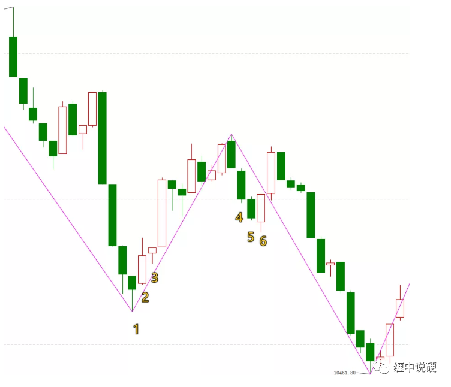
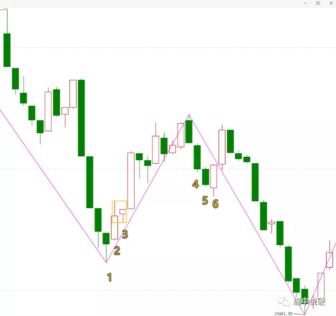
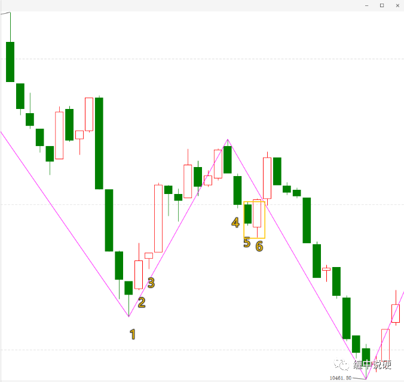
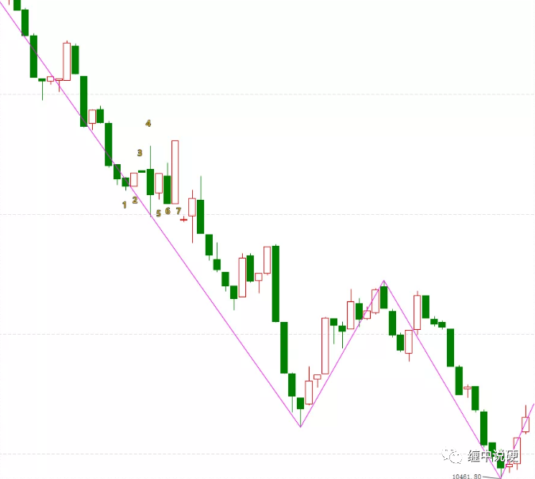
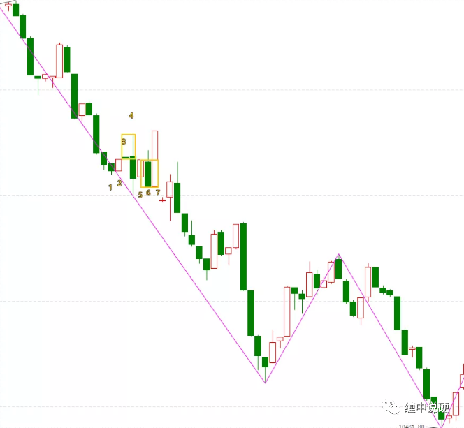

k线合并实际案例解析

这个案例把所有包含的逻辑都包括了。
2,3是包含关系；
5,6是包含关系；
区别在于2,3是前包含后；5,6是后包含前。
2对比1是向上，也就是2的高点>1的高点，and2的低点>1的低点，这里注意，没有=,如果有=，1和2就必然包含了，就要先处理1和2的关系。然后2,3的包含关系就是向上包含，也就是取2,3的高点的高点，and低点中的高点，生成标准的k线。

黄色方框就是k线标准化之后的k线。
同理4和5方向向下，5和6就向下包含，取5和6中低点中的低点，and高点中的低点。

上图黄色方框为标准化后的k线。
接下来，合并后的标准k线如果和后面新生成的k线继续包含，还要继续包含处理关系，直到不包含为止。需要注意的是，继续处理包含关系和之前的合并方向要保持一致。

1和2向上；
2和3继续向上；
3和4包含，用向上包含处理；
5和包含过的新34向下；
5和6向下合并；
新56和7继续包含，继续向下合并成567。（如下图所示）

1-7做k线标准化处理后形成新的标准的3根k线。这三根k线就是顶分型。